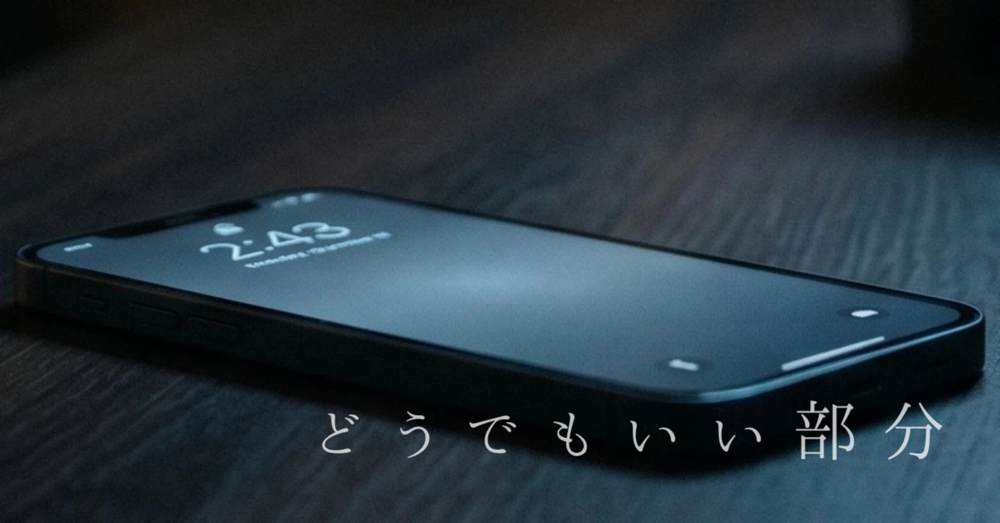
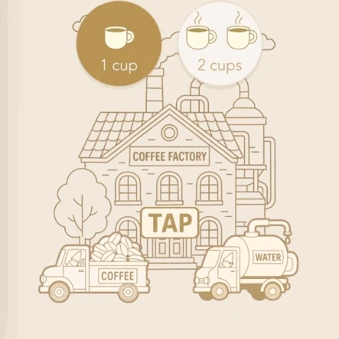
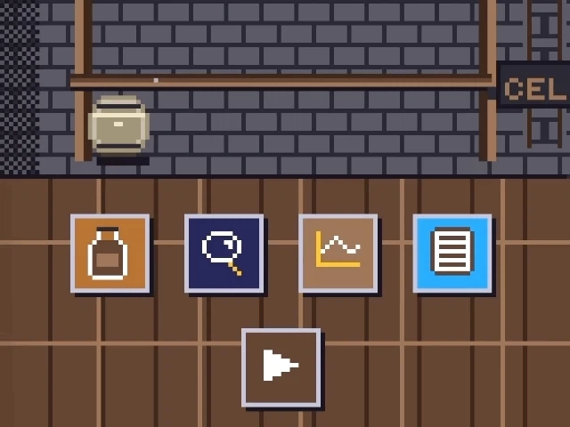
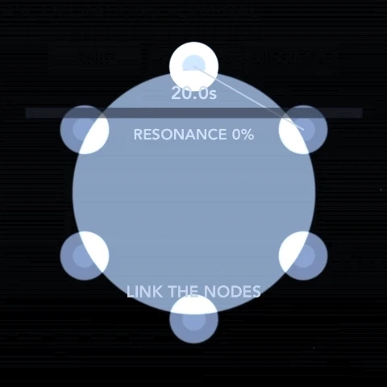
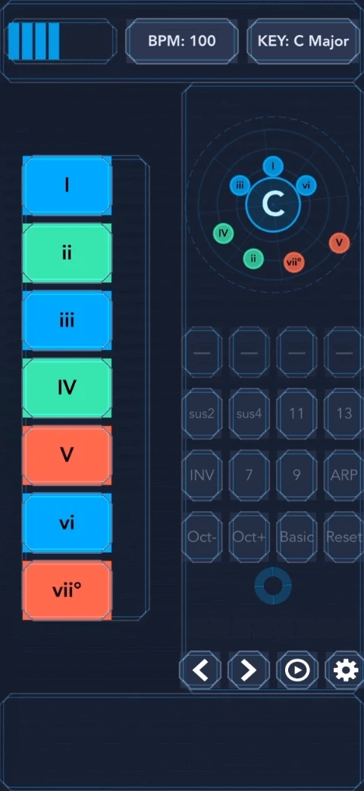
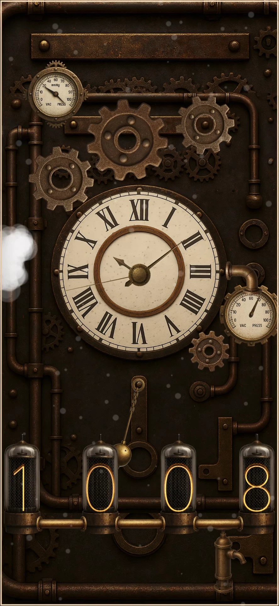
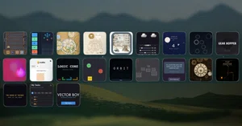

どうでもいい部分が、なぜか残る
どうでもいいはずなのに、
なぜか残っているものがあります。
自分専用アプリを作っていると、そんな部分ばかり増えていきます。
バグを直したり、新しい機能を追加したりするよりも、
そういうところを触っている時間の方が長くなります。
たとえば、「CoffeeFactory」というアプリでは、
コーヒーの杯数を変えると、トラックの見た目が変わります。
杯数を増やすと少しだけ重そうに見えるのが、
何となく気に入っています。

「TapMaster」では、
できるだけ文字を使わないUIにこだわりました。
ゲームモードはビールの銘柄で、
ステージ選択はグラスの種類で表現しています。
結果的にその方がしっくり来ました。
「AmberTime」では、
たまにネズミが現れて、棚を走り回ります。
ゲームの進行には関係ありませんが、そこに生活が続いている気配がします。

「ORBIT」は、基地を修復するとき、
簡単なミニゲームを挟んでいます。
ボタンひとつで終わらせることもできますが、
少しずつ直している感触が残る方がしっくりきました。

「ChordDrift」では、
特定のコード進行をなぞると「小室進行」「カノン進行」などと名前が表示されます。
気づいたときに、ちょっとだけ嬉しくなります。

「SteamClock」には、
スクリーンショット用の特別なモードがあります。
表示される時間は、10時8分42秒。
時計がきれいに見える配置とされています。

こういうことばかりしていると、
「そこじゃないでしょ」と言われそうな気もします。効率を考えれば、無駄なことばかりです。
でも、ずっと触っていると、そんなところばかりが残っていきます。
ちゃんとした部分はあとからいくらでも直せますが、こういう部分だけはなぜか消せずに残っています。

自分専用アプリを21個つくって、最後に残ったもの。―正解を出さない時間はじめに 公開する予定もないのに、自分専用のアプリを２１個作っていた。そのすべての記事を書き終えた。並んだアイコンを眺めながら、この静かな連載は、誰にも届かないのではないかと、少しだけ心が揺れた。 皆が競ってアプリを公開している時代に、自分専用アプリの話なんて、興味を持つ人がいるだろうか。しかし考えてみれば…